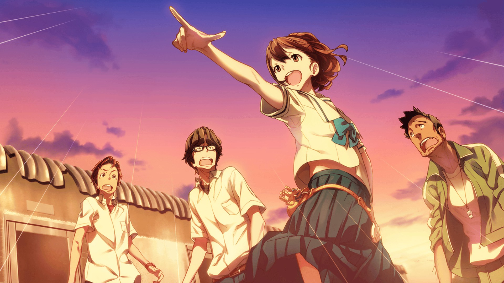
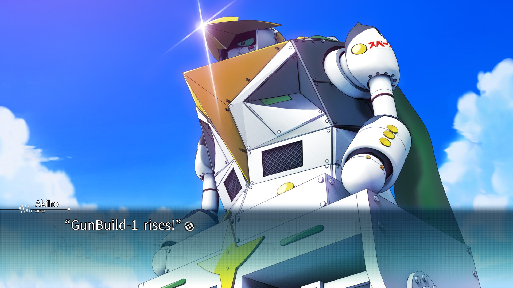
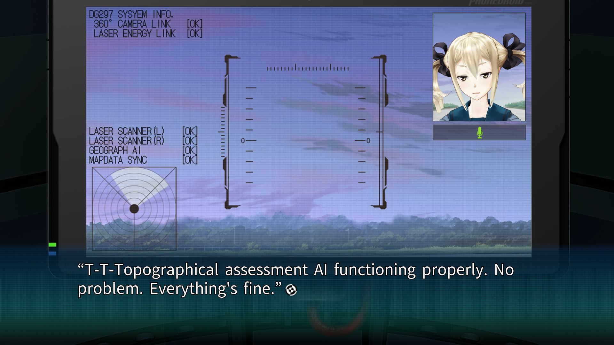

Robotics;Notes is a science-fiction slice-of-life visual novel in the Science Adventure series. It revolves around a group of highschoolers who join a robotics club, interact amongst themselves and others in their tiny island community, and become embroiled in a cataclysmic plot to kill the planet. Meanwhile, it shows a lot of love to the mecha genre, has several romance routes that are tied to the main plot, and has powerful emotional ups-and-downs worthy of its spot in the SciADV lineup. If you're familiar with Science Adventure, you know the heights the story is likely to go, and the lows it's likely to reach, and despite this you're probably not going to come out of this feeling as though it only met expectation.
My Expectations:
I went into Robotics;Notes with a certain set of expectations. Many people I'd talked to had said it was "mid" or even "garbage," but I wanted to give it a chance. I'd already read and completed Chaos;Head, Steins;Gate, and Chaos;Child by the time I started with this, so I was familiar with the universe and what things could be like. I expected some light slice-of-life elements, some otaku humor, and some genuine heartbreak, along with a plot that far outscaled anything the main characters would really be capable of without deus ex machina. I expected really solid character designs, romance routes that branch the story, and character interactions worth reading for.

The Story:
As stated above, Robotics;Notes is a story about a group of highschoolers who join a robotics club, as well as their eventual involvement in a conspiracy to kill the planet. In this, you'll notice that I've separated that into two halves. That's much of how this game went. The sections of the plot focused around the female lead, Akiho, were centered around the ordinary, often lighthearted operations of the Chou Tanegashima Robotics Club, doing things like building hobby robots, her enjoyment of mecha anime like Gunvarrel, her family relationships, preparing for tournaments and expos, and the day-to-day operations and costs required to maintain this. These sections are often my favorite, because they play off of what this game does best, which is the character interactions. The cast are goofy and cringey at times, but they're highschoolers for the most part, and they play off of each other well even when they don't get along. Subaru and Frau play excellently as a comedic duo, and when the group is all together it can be as chaotic as a small town highschool club can be.
In stark contrast, Kaito's sections of the story are primarily focused around the conspiracy, interactions with Airi, a seemingly-sentient augmented reality AI, and most notably, the acquisition Kimijima Reports. Because Kaito doesn't want to involve his friends in the danger if it can be avoided, this means that most of these sections are spent alone or with a single other character, and therein lies the problem. Kaito is a wet blanket of a character that ruins any narrative momentum the story has, and he plays extremely poorly off of any character other than Akiho (and sometimes Frau). Despite being the "main" character, his routes with each heroine result in him doing very little for their routes, eventually resulting in enough 1-on-1 time to make the character seem uninteresting. Worst among them is Junna, who functions a a bit of a coward throughout the plot due to trauma in her past. There's nothing wrong with trauma, and her route explores it quite well, but her anxiety makes it hard to spend extended periods of time with just her and Kaito. I personally do not think that romance routes focusing on the character who doesn't want to really interact with others were a great writing decision, and I'm glad to say they are not their own "endings."
The way the story structure actually works is that all endings are canon, and flow into one another as they are unlocked. Once Junna, Nae, and Frau's endings are complete, you're able to access the finale, which is about 40% of the story and is focused almost entirely on Akiho and Kaito. Despite the problems I stated above, this is the strongest part of the game narratively, giving a strong coalescence of the two different "halves" of the story. It has a lot of ups and downs, and results in telling a standard but exciting mecha story about how caring for your community and working together is the only way to solve things, and that no individual wins the battle against evil. It touches briefly on some subjects regarding morality and trauma, but refuses to dig deeply in, which I think works to its benefit in this case. The main villain is set-up weirdly and has compeltely opaque intentions, which wouldn't play well if the story had anything to actually say about morality, and the final battle is cinematic and flashy, just like a mecha anime. Overall, very solid.

The Mechanics:
As part of the SciADV series, choices in this game are not made in a standard manner. Instead, similarly to Steins;Gate's text triggers, this game uses relationship stats tracked via replies on Twipo, the in-universe equivalent of Twitter. This is actually to the benefit of the player, as through Twipo you also get to see a little bit of what characters are doing when you're not interacting with them, as well as how the world is reacting to various events. However, similarly to the other SciADV games, the way your choices affect these things can be pretty opaque, and if you don't plan ahead, it can be hard to take yourself down certain routes, which is needed to see the true ending. However, if you're familiar with previous entries, this one is much more forgiving due to the frequency at which these interactions occur. If all else fails, there are spoiler-free guides to the system, and there's no knock from me on needing to use one, as I had to do it myself as I got stuck trying to get Frau's route to start. Controls on the PC version were reponsive, a little bit too much at times, but only support keyboard or controller natively, needing the Committee of Zero patch to use the mouse like a normal VN. However, it was clear this game was designed to be played with a controller due to the presence of quicktime events with multiple button presses in a row, sometimes ten or more. I have no real complaints, but I can see those being annoying for some players. Additionally, the Geotag system, in which you zoom in on parts of the background with "augmented reality" were a little finnicky and annoying from time to time, but ultimately weren't super necessary outside of getting 100% completion.

Music, Sound, and Art:
As always I'm no musician, and yet I enjoyed this score. The main theme of the game is upbeat and fitting for the mecha genre, despite this not really being a mecha game. The songs for emotional moments were rightfully emotional; not just the sad ones either. Tense moments had great tense music, triumph, failure, and panic were all great. The sound design was really solid as well, with high-quality sound effects from time to time (although the sound effect when Akiho quotes mecha anime characters got a little old). I personally can't handle the sound of a heartbeat, and that one is very prevalent in this game, so if you're like me, you may want a mute on a hotkey. Artistically, every CG was great, the anime style was played with a lot for the goofy tone, and even the sad portions used the distorted point of view to keep it consistent. The backgrounds were great, but come out a little grainy in close-up, which you'll need to do a lot for the Geotag system. This game eschewed standard static character sprites or live2D billboards for full 3D models, and while I didn't love it at first, it added a charm that I came to love, as all of the motions, the little mannerisms, and the reactions really popped. It also added to the game with moments where the "augmented reality" really became part of the game, although those were few and far between. All of the cutscenes were solid and very fitting as well, although a bit sparse. and overall I have very little complaint about the art, sound, and music direction of this game.

Would I Recommend This?:
I think if you're a fan of Science Adventure or a fan of slice of life VNs, you'll probably enjoy this. There's enough quality here to make up for the spots in the story that felt a bit lacking. The pacing is a little rushed from time to time, and some characters fall flat or are rushed out of the story in ways that feel like they didn't quite know what to do with them, occasionally. However, if you stick with it, I think most people who are into either of the aforementioned things will have a good time, and you might still otherwise. I would recommend playing Steins;Gate first, however, as enough of that game's plot is relevant here that it would be doing yourself a disservice not doing so. Overall, my score is a 7.5/10.